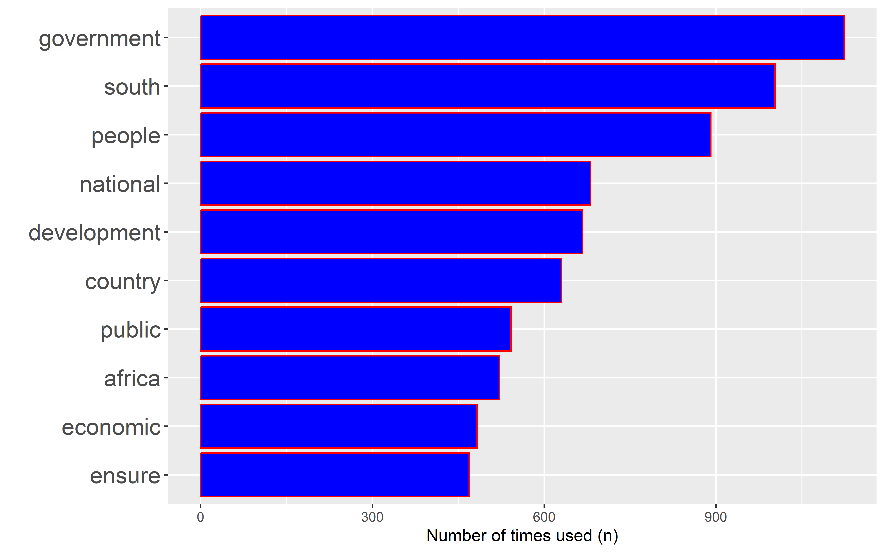
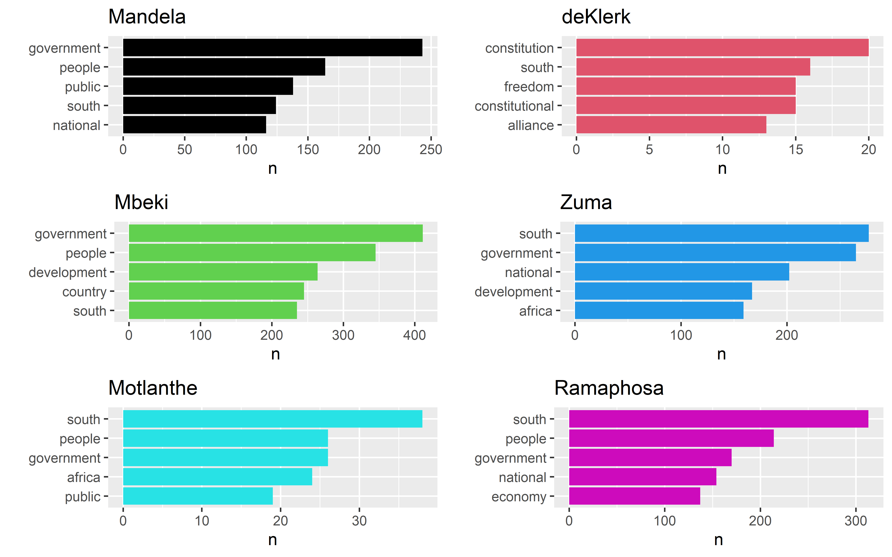
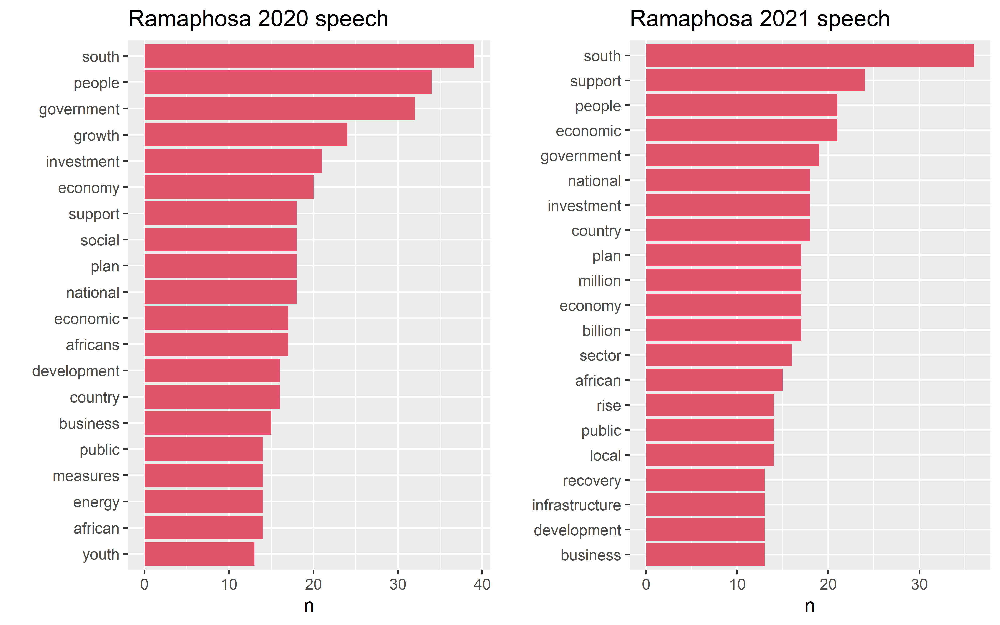
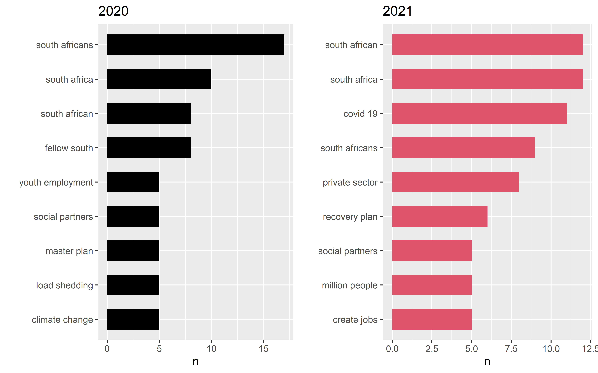

Data Science for Industry Assignment 2
Abstract
Start with textmining ….
The State of the Nation Address of the President of South Africa (SONA) is an annual event in which the President of South Africa reports on the status of the nation, normally to the resumption of a joint sitting of Parliament. This tends to be a long speech detailing every aspect on the state of the country. In this paper, we construct and compare three predictive models that take a sentence of text as input and return a prediction of which president was the source of that sentence. The 3 predictive models which are compared are neural networks, decision tree and random forest.
Our findings reveal that ….
Introduction
The objective of this paper is to construct at least three predictive models that takes a sentence of text as input and return a prediction of which president was the source of the that sentence. The data set that will be used is the State of the Nation Address of the President of South Africa (SONA). The data set contains speeches of all the SONA from 1994 to 2022. This is a multi-classification problem with 6 classes since we had 6 presidents who have done speech in the specified period.
Th paper is divided into three main sections namely methodology , results and conclusion. The methodology sections contains 3 sub-sections outlined below:
Data pre processing - overview of how the data was cleaned and transformed to the required form in order to apply the predictive models and also conduct Exploratory Data Analysis..
Exploratory Data Analysis - summary of the data set where we look at the most used words and n-grams by the presidents. We also take a closer looker at president Cyril Ramaphosa speech for pre and post Covid-19 , these are the 2020 and 2021 speeches.
Fitted predictive models - in this subsection , we provide a brief theory behind all the predictive models fitted in our dataset and what exactly they do.
The results section contain all the results of our
Methodology
Data pre processing
The data set is loaded in R
Exploratory Data Analysis
In this study , the SONA data set will be used. This dataset contains all the speeches of the previous presidents from 1994 to 2023 which is in the form of text file. Pre processing of the data set is conducted so that we’re able to transform the dataset into the required form. The steps taken to clean and transform the data are indicated below.

Top 10 most words used by each president.

2020 and 2021 Ramaphosa’s speeches


Bag of words model
The machine learning algorithms that will be applied in the paper accept a certain format of text data as they cannot operate on raw text. This means the data set must be represented in a numerical form prior being feed into a machine learning algorithm. Topper (n.d.) The bag-of-words model is used to for this , one can think of this as a method to convert words to numerical representation.
In this study, we are interested to tokenizer the data into sentences rather than words. To achieve this, the data set is tokenized using token 1 as sentences. And extra column, index is added which shows the index of the sentences in the data . The tibble is further tokenized into words. The bag of words model will be based on the top 1000 most used words by the presidents. AN
tf-tdf model
This model measures the importance of a word to a document in a collection of documents ( Robinson (n.d.) ) This is measureed by how frequently a words occurs in a document, which is termed term frequency (tf). For the bag of words model, we need to consider whether to remove stop words or not. But this model uses the approach where it looks at a term’s inverse document frequency (idf), this decreases the weight for commonly used words and increase the weights for those words that are not commonly used in the document. This implies for this model, we do not have remove stop words. The inverse document frequency of any given term is defined as
idf(\text{term}) = \ln \left( \frac{n_{\text{docs}}}{n_{\text{docs containing term}}} \right) \tag{1}
where n_{\text{docs}} is the number of documents. The bind_tf_idf() function available on the tidyverse library to convert our data set to this format. Equation 1 can be applied if one does the conversion form first principles , which is essentially what the function is performing.
Predictive models
To fit the predictive models, different formats of the data sets will be used to access the performance of each model under each format. The bag-of-words format and the TF-IDF format and also other format that will take into account the issue of imbalance of the data as discussed in section ///. This aims to briefly explain the theory behind each model that will be fitted and also some packages and hyper-parameters that will used in our problem. The exact hyper-parameters are displayed in Section 4 . For example, would be number of trees to be used for the tree based models. In the section, we wo
The data set will be splitted into a training set and testing set. The training set will be used to train the dataset and performance of each model will assessed on the testing set. We used a 70/30 splitting rule, i.e. 70\% of the data will be used as the training set and 30\% as the testing set.
Neural network
In this section , we fit a multi-layer perceptron Neural network. This network solves the shortcoming of the Feedforward Neural Network of not being able to learn through backpropagation. It is mainly used for classification problem which is exactly what we have. Since we have 6 presidents, this can be considered as a multiclassification problem with 6 classes. The fitting of the Neural Network is implemented using keras package in R. The parameters involved in fitting the model in keras are explained below:
keras_model_sequential() This part we specify the number of layers in our model and the activation function that each must have . The activation function used depends on the type of data set in question.
The most common used activation functions are sigmoid, ReLU and softmax .
For the base model, we used 3 layers. For the input layer, the ReLU activation function will be used with 201 units. And for the hidden layers, we use the softmax activation will be used for output layer and ReLU activation for the input layers.
compile()
This is the step one specify the loss function , optimizer and metrics. In our case, since this is a classification problem with 6 classes, the categorical_crossentropy is used. We use accuracy for metric and adam for the optimizer.
To fit the model, we specify the response variable and input variable and the number of epochs .
Tree based methods
The other predictive models that are considered are decision trees, which will include classification trees , random forests and gradient boosted trees. Each of these have their own advantage and disadvantage which will be explored below. The main aim to fit these tree method is to compare them to our neural network results. One of the disadvantanges of these methods is that the predictive accuracy of the trees is not as good as some other classification approaches.
Classification trees
Classification trees are applied to problems where the target variable is categorically which is relevant to our data set. At each step during the tree growth, a certain splitting criterion must be applied. The splitting criteria that exists in the literature are the Gini Index , Entropy and Deviance. In the paper, the Gini Index will be splitting criterion used for splitting the classification trees. The Gini Index measures the variability within the leaf nodes of a tree. At each step during tree growth, we choose a split that results in the greatest reduction of the Gini Index. The Gini Index is given by
G =\sum_{j=1}^J G_j \quad \text{where} \quad G_j = \sum_{k=1}^K \hat{p}_{jk}(1-\hat{p}_{jk} )
\hat{p}_{jk} is the proportion of observations in the target variable k =1 ,..., K within leaf node j=1,…,J
This method will be implemented using the rpart() package in R with method = class since this is classification problem with 6 classes i.e. the number of presidents in the data set. The default splitting criteria used by this package is the Gini index.
Random Forests
This method uses bootstrapping sampling technique to grow trees on the bootstrap samples. The predictions are made by taking the majority vote (for classification problems) i.e. the prediction for an observation will be one occurring mostly among the 6 categories. The method also provides an improvement by decorrelating the trees that are produced on the boostrap samples. This will be implemented by using the randomForest package in R, the difference between a classification problem and regression problem in this package is the default value for number of trees used (mtry). For classification problem, \text{mtry} \approx \sqrt{p} and for regression problem , \text{mtry} = \frac{p}{3} where p is the number of predictor variables in the data set.
Gradient Boosted Trees
Tuning parameters for the gbm package:
B the number of trees to grow -
Learning rate (\lambda) -
Number of splits in each tree d -
In the methods stated above, one can explore the importance of the predictor variables used. However, our interest is to compare the performance of these models to the Neural Network in Section 3.3.1 section.
Results
Neural network
Classification trees
| Data set | Accuracy |
|---|---|
| Bag-of-words format | |
| TF-IDF format | |
Random Forest
| Data set | Accuracy |
|---|---|
| Bag-of-words format | |
| TF-IDF format | |
Gradient Boosted trees
Discussion and conclusion
Discuss which models performed better under each type of data set used?
What could be improved and some future recommendations?
List of packages used in R
In this section , we includes the main packages that we used in R and the corresponding sections in which the packages were used. The packages have also been cited under references. We only include the package names, not the individual functions that available under each package. These are shown in Table 3 . [Remove this]
| Package name | Usage |
|---|---|
tidyverse |
Data cleaning and pre-processing |
tidytext stingr |
Manipulation of text data |
keras |
Fit a feed-forward neural network |
gridExtra |
Organize multiple plots produced by the ggplot package to be one figure during EDA. |
rpart randomForest gbm |
Fitting a classification tree for bag of words and TF-IDF models. |
Data accessibility
The originial dataset used for this study can be found in link . We have also read the individual text files of the speeches for reading the data on R from Ian’s github page. All the analysis and fitting of models in this study will conducted using the free Statistical Computing software R. R Core Team (2023)
References
Footnotes
A unit used to split the data in the process of tokenization.↩︎